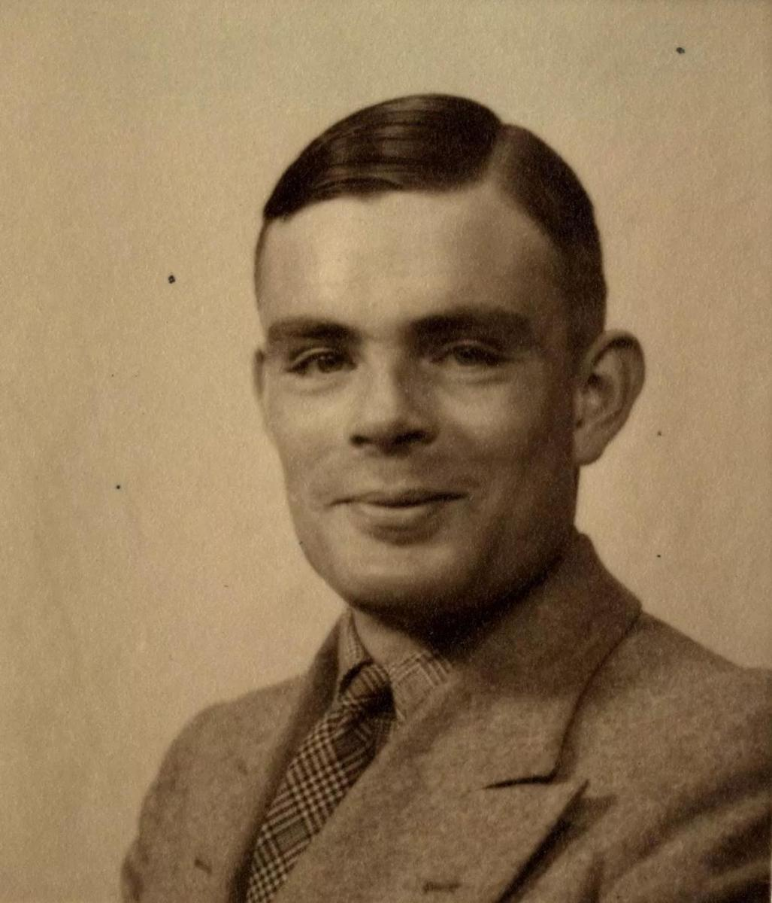

Biografia Alan Turing
1912-1954

En este apartado se podrá visualizar una breve línea del tiempo sobre el matemático/informático Alan Turing
1912
Nace el 23 de junio de 1912 en Maida Vale, Reino Unido. Era hijo de Julius Mathison Turing, miembro del cuerpo de funcionarios británicos en la India. Su madre era Ethel Sara Stoney, hija del ingeniero jefe de Madras Railways.
1920-1930
1922 Estudia en la preparatoria de Hazelhurst, una escuela independiente en Frant, Sussex.
1926 Ingresa en el internado de Sherborne en Dorset.
1930 El 13 de febrero fallece su amigo Christopher Morcom debido a la tuberculosis bovina. Tras graduarse en la Universidad de Cambridge, se traslada a Estados Unidos a la Universidad de Princeton donde trabaja con el lógico Alonzo Church, creador de la base de la computación teórica. Allí también conoce a Godfrey Harold Hardy.
1930-1940
1935 Es nombrado profesor del King’s College
1936 Formalizó los conceptos de algoritmo y la computación: la máquina de Turing. Formula su versión de la tesis de Church Turing
1936 En su trabajo acerca de los números computables, introduce el concepto de la máquina de Turing. Además, junto a Alonzo Church, demuestra que es imposible escribir un algoritmo para resolver el problema de decisión expuesto por Leibniz en el siglo XVII.
1938 Regresa a Cambridge donde estudia filosofía de las matemáticas.
1938 Obtiene el Doctorado en Princeton e introduce el concepto de hipercomputación.
1939 Durante la Segunda Guerra Mundial trabajó para descifrar los códigos nazis, especialmente los de la máquina Enigma. Fue director de la sección Naval Enigma.
1940-1950
1945 Se traslada a Richmond, Londres, donde trabaja en el Laboratorio Nacional de Física.
1947 Comienza a trabajar en el diseño del ACE (Automatic Computer Engine, o motor de computación automática). Posteriormente creó el Abbreviated Conde Instruction, el cual dio origen a los lenguajes de programación.
1948 Es nombrado director delegado del laboratorio de informática de la Universidad de Manchester. Trabajó en el software de una de las primeras computadoras reales, la Manchester Mark I.
1950 En el campo de la Inteligencia artificial se le conoce por la concepción de la prueba de Turing, según la cual un criterio para juzgar la inteligencia de una máquina sería si sus respuestas en la prueba son indistinguibles de las de un ser humano.
1950-1960
1950 Publica Computing machinery and intelligence.
1952 Intenta implementar un programa de ajedrez en el Ferranti Mark I pero el ordenador no pudo ejecutar el programa por falta de potencia.
1952 Comienza a trabajar en biología matemática
1952 Turing es procesado por homosexualidad (considerada un delito en el Reino Unido en ese momento) y opta por la castración química como alternativa a la prisión.
1954 Alan Turing muere el 7 de junio, en Wilmslow, Cheshire, Inglaterra, en lo que se considera generalmente como un suicidio por envenenamiento con cianuro.